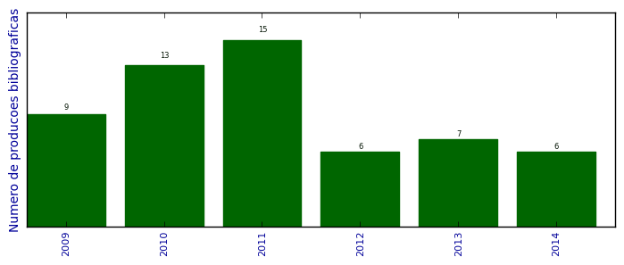

UFSM - Análise do Lattes
Total de produção bibliográfica

Número total de itens: 56
2014
| 1. | BRAGA, MURIELE P. ; DALCIN, TÁSSIA C. S. ; ROSA, PRISCILA ; CODEVILLA, CRISTIANE F. ; SILVA, CRISTIANE B. DA ; ROLIM, CLARICE M. B. ; ADAMS, ANDRÉA I. H.. ASSAY AND PHOTODEGRADATION KINETICS OF DESONIDE LOTION BY AN LC-UV STABILITY-INDICATING METHOD. Journal of Liquid Chromatography Related Technologies (Print). v. 37, p. 1968-1984, 2014.  [ citações Google Scholar | citações Microsoft Acadêmico | busca Google ] Qualis: B2 (Journal of Liquid Chromatography & Related Technologies (Print)) |
| 2. | CHRIST, ANA PAULA ; MACHADO, MARIANA SOUTO ; ROSA, PRISCILA ; CODEVILLA, CRISTIANE FRANCO ; BUENO ROLIM, CLARICE MADALENA ; HORN ADAMS, ANDRÉA INÊS. Development and validation of a stability-indication LC-UV method for determination of daptomycin injectable form and kinetic study in alkaline medium. Analytical Methods (Print). v. 6, p. 1242, 2014. [ citações Google Scholar | citações Microsoft Acadêmico | busca Google ] Qualis: B2 |
| 3. | FLORES, F. C. ; LIMA, J. A. ; SILVA, C. R. ; BENVEGNU, D. M. ; BURGER, M. E. ; BECK, R. C. R. ; ROLIM, C.M.B. ; ROCHA, M. I. U. M. ; VEIGA, M. L. ; SILVA, C. B.. Hydrogels containing nanocapsules and nanoemulsions of tea tree oil provide antiedematogenic effect and improved skin wound healing. Journal of Nanoscience and Nanotechnology (Print). 2014. [ citações Google Scholar | citações Microsoft Acadêmico | busca Google ] |
| 4. | RUBIM, A. M. ; LAPORTA, L. V. ; RUBENICK, J. B. ; ROLIM, C.M.B.. Development and validation of a dissolution method using HPLC for diclofenac potassium in oral suspension. Brazilian Journal of Pharmaceutical Sciences (Impresso). 2014. [ citações Google Scholar | citações Microsoft Acadêmico | busca Google ] |
| 5. | VELASQUEZ, A. A. ; FERRERIA, L. M. ; STANGARLIN, M. F. L. ; SILVA, C. B. ; ROLIM, C.M.B. ; CRUZ, L.. Novel Pullulan/Eudragit S100 blend microparticles for oral delivery of risedronate: formulation, in vitro evaluation and tableting of blend microparticles. Materials Science Engineering. C, Biomimetic Materials, Sensors and Systems (Print). v. 38, p. 212-217, 2014. [ citações Google Scholar | citações Microsoft Acadêmico | busca Google ] Qualis: B1 (Materials Science & Engineering. C, Biomimetic Materials, Sensors and Systems (Print)) |
| 6. | VELASQUEZ, A. A. ; MATTIAZZI, J. ; FERRERIA, L. M. ; POHLMANN, L. ; SILVA, C. B. ; ROLIM, C.M.B. ; CRUZ, L.. Risedronate-loaded Eudragit S100 microparticles formulated into tablets. Pharmaceutical Development and Technology (Print). v. 19, p. 1-6, 2014. [ citações Google Scholar | citações Microsoft Acadêmico | busca Google ] Qualis: B2 |
2013
| 1. | CODEVILLA, CRISTIANE ; ROSA, PRISCILA ; STEPPE, Martin ; BERGOLD, ANA MARIA ; ROLIM, CLARICE M. B. ; ADAMS, ANDRÉA INÊS HORN. Development and validation of a stability-indicating micellar electrokinetic chromatography method to assay voriconazole tablets. Analytical Methods (Print). v. 5, p. 5051-5057, 2013. [ citações Google Scholar | citações Microsoft Acadêmico | busca Google ] Qualis: B2 |
| 2. | FLORES, F. C. ; LIMA, J. A. ; RIBEIRO, R. F. ; ALVES, S. H. ; ROLIM, C.M.B. ; BECK, R. C. R. ; SILVA, C. B.. Antifungal Activity of Nanocapsule Suspensions Containing Tea Tree Oil on the Growth of Trichophyton rubrum. Mycopathologia (Dordrecht. Online). v. 175, p. 281-286, 2013. [ citações Google Scholar | citações Microsoft Acadêmico | busca Google ] Qualis: B2 |
| 3. | MARCOLINO, ANA ISA PEDROSO ; SANGOI, MAXIMILIANO ; STEPPE, Martin ; ADAMS, ANDRÉA INÊS HORN ; ROLIM, CLARICE M. B.. Determination of dronedarone in pharmaceutical dosage form by stability-indicating micellar electrokinetic chromatography method. Analytical Methods (Print). v. 5, p. 3106-3113, 2013. [ citações Google Scholar | citações Microsoft Acadêmico | busca Google ] Qualis: B2 |
| 4. | RUBIM, A. M. ; RUBENICK2, J. B. ; LAPORTA, L. V. ; ROLIM, C.M.B.. A simple method for the quantification of diclofenac potassium in oral suspension by high-performance liquid chromatography with UV-detection. Brazilian Journal of Pharmaceutical Sciences (Impresso). v. 49, p. 589-597, 2013. [ citações Google Scholar | citações Microsoft Acadêmico | busca Google ] Qualis: B2 |
| 5. | SANGOI, Maximiliano da Silva ; WRASSE-SANGOI, M. ; HURTADO, F. K. ; ROLIM, Clarice Madalena Bueno. Stress degradation studies on aliskiren and the development of a sensitive stability-indicating MEKC method. Acta Chromatographica. v. 1, p. 1-14, 2013. [ citações Google Scholar | citações Microsoft Acadêmico | busca Google ] Qualis: B2 |
| 6. | SANTA, F. D. ; SPEROTTO, L. E. ; BRAGA, M. P. ; DALCIN, T. C. S. ; CODEVILLA, C. F. ; MENEGHINI, L. Z. ; DONATO, E. M. ; ROLIM, C ; BERGOLD, A. M. ; ADAMS, A. I. H.. Development and validation of a simple stability-indicating LC-method and UVA photostability study of desonide hair lotion. Current Analytical Chemistry. v. 49, p. 1-8, 2013. [ citações Google Scholar | citações Microsoft Acadêmico | busca Google ] Qualis: B2 |
| 7. | SILVA, C. V. ; FERREIRA, M. ; ROMERO, C. S. ; BORTOLUZZI, M. R. ; LIMA, F. O. ; ROLIM, C.M.B. ; CARVALHO, L. M.. A capillary zone electrophoretic method for the determination of hypoglycemics as adulterants in herbal formulations used for the treatment of diabetes. Analytical Methods (Print). v. 5, p. 2126-2133, 2013. [ citações Google Scholar | citações Microsoft Acadêmico | busca Google ] Qualis: B2 |
2012
| 1. | BRAGA, M. P. ; MACHADO, M. S. ; DALCIN, T. C. S. ; ROSA, P. ; ROLIM, C.M.B. ; ADAMS, A. I. H.. Development and validation of a simple stability-indicating method and photodegradation study of desonide lotion. 2012. Apresentação de Trabalho/Congresso |
| 2. | BRAGA, M. P. ; ROSA, P ; DALCIN, T. C. S. ; ROLIM, C.M.B. ; ADAMS, A. I. H.. Multivariate optimization and validation of Lc-Methods to assay desonide. 2012. Apresentação de Trabalho/Congresso |
| 3. | HURTADO, F. K. ; RAVANELLO, A. ; TORRES, B. G. S. ; SOUTO, G. D. ; BECK, R. C. R. ; ROLIM, C. Development of a Discriminating In Vitro Dissolution Method for the Poorly Soluble Drug Rimonabant: Effect of Formulation Variables on Dosage Form Release Profiles. Dissolution Technologies. v. 19, p. 30-36, 2012. [ citações Google Scholar | citações Microsoft Acadêmico | busca Google ] Qualis: B2 |
| 4. | MARCOLINO, A. I. P. ; SCHEEREN, L. E. ; SANGOI, Maximiliano da Silva ; STEPPE, M. ; ROLIM, C.M.B.. Dronedoreone: determination in tablet dosage form by micellar electrokinetic chromatography, high-performance liquid chromatography and UV spectrophotometry. Em: FIP Centennial Congress 2012, 72nd International Congress of FIP, 2012, Amsterdam. Centennial Congress abstracts and presentations, v. 1, p. XX-XX, 2012. [ citações Google Scholar | citações Microsoft Acadêmico | busca Google ] |
| 5. | RAVANELLO, A. ; DELGADO, L. S. ; MARCOLINO, A. I. P. ; CODEVILLA, C. F. ; ADAMS, A. I. H. ; ROLIM, Clarice Madalena Bueno. A Simple Stability-Indicating LC-UV Method to Assay Sitagliptin Phosphate in Tablets. Current Analytical Chemistry. v. 8, p. 569-573, 2012. [ citações Google Scholar | citações Microsoft Acadêmico | busca Google ] Qualis: B2 |
| 6. | ROSA, P ; BRAGA, M. P. ; SALLA, A. P. S. ; DALCIN, T. C. S. ; SILVA, C. B. ; ROLIM, C.M.B. ; ADAMS, A. I. H.. Photostability study of desonide in hair solutions by LC stability-indicating method. 2012. Apresentação de Trabalho/Congresso |
2011
| 1. | BERNARDI, P. M. ; POITEVIN, F.S. ; MARCOLINO, A. I. P. ; DELGADO, L. S. ; ROLIM, C. Microbiological assay for determination of levofloxacin fluid for injection. Em: 8º International Congress of Pharmaceutical Science, 2011, Riberão Preto. Livro de Resumos do International Congress of Pharmaceutical Science, v. 1, p. 54-54, 2011. [ citações Google Scholar | citações Microsoft Acadêmico | busca Google ] |
| 2. | CODEVILLA, C. F. ; LEMOS, A. M. ; DELGADO, L. S. ; ROLIM, Clarice Madalena Bueno ; ADAMS, A. I. H. ; BERGOLD, A. M.. Development and Validation of a Stability-Indicating LC Method for the Assay of Lodenafil Carbonate in Tablets. Journal of Chromatographic Science. v. 49, p. 502-507, 2011. [ citações Google Scholar | citações Microsoft Acadêmico | busca Google ] Qualis: B2 |
| 3. | Dalla Santa, F. ; SPEROTTO, L. E. ; BRAGA, M. P. ; MARCOLINO, A. I. P. ; ROLIM, Clarice Madalena Bueno ; ADAMS, A. I. H.. Photostability of desonide hair lotion by LC stability indicating method. 2011. Apresentação de Trabalho/Simpósio |
| 4. | DELGADO, L. S. ; SECRETTI, L. T. ; LEMOS, A. M. ; ADAMS, A. I. H. ; ROLIM, Clarice Madalena Bueno. Simultaneous assay of ebastine and pseudoephedrine in capsules by LC and derivative spectrophotometric methods. Em: 23 rd International symposium on pharmaceutical Biomedical analysis, 2011, João Pessoa. 23 rd International symposium on pharmaceutical Biomedical analysis, v. 1, p. 64-64, 2011. [ citações Google Scholar | citações Microsoft Acadêmico | busca Google ] Qualis: Não identificado (23 rd International symposium on pharmaceutical Biomedical analysis, 2011, João Pessoa. 23 rd International symposium on pharmaceutical Biomedical analysis) |
| 5. | DELGADO, L. S. ; SECRETTI, L. T. ; LEMOS, A. M. ; ADAMS, A. I. H. ; ROLIM, Clarice Madalena Bueno. Simultaneous assay of ebastine and pseudoephedrine in capsules by LC and derivative spectrophotometric methods. 2011. Apresentação de Trabalho/Simpósio |
| 6. | FLORES, F. C. ; ALVES, S. H. ; ROLIM, Clarice Madalena Bueno ; BECK, R. C. R. ; SILVA, C. B.. Effect of nanostructured systems containing tea tree oil on the growth trichophyton rubrum in an in vitro onychomicosis model. Em: XXVI Reunião Anual da Federação de Sociedades de Biologia Experimental, 2011, Rio de Janeiro. Livro de resumos da Reunião Anual da Federação de Sociedades de Biologia Experimental, v. 1, p. 75-75, 2011. [ citações Google Scholar | citações Microsoft Acadêmico | busca Google ] |
| 7. | FLORES, F. C. ; RIBEIRO, R. F. ; OURIQUE, A. F. ; BECK, R. C. R. ; ROLIM, Clarice Madalena Bueno ; GUTERRES, S. S. ; POHLMANN, A. R. ; SILVA, C. B.. Nanostructured systems containing an essential oil: protection against volatilization. Química Nova (Impresso). v. 34, p. 968-972, 2011. [ citações Google Scholar | citações Microsoft Acadêmico | busca Google ] Qualis: B2 |
| 8. | MARCOLINO, A. I. P. ; DELGADO, L. S. ; BERNARDI, P. M. ; SOUZA, N. R. ; ADAMS, A. I. H. ; ROLIM, Clarice Madalena Bueno. Determination of the new antiarrhythmic drug dronedarone in tablet dosage form by reversed-phase chromatograpy. Em: 8º International Congress of Pharmaceutical Science, 2011, Riberão Preto. Livro de Resumos do International Congress of Pharmaceutical Science, v. 1, p. 49-49, 2011. [ citações Google Scholar | citações Microsoft Acadêmico | busca Google ] |
| 9. | SANGOI, M.S. ; WRASSE-SANGOI, M. ; OLIVEIRA, P.R. ; ROLIM, C.M.B. ; STEPPE, M.. Simultaneous determination of aliskiren and hydrochlorothiazide from their pharmaceutical preparations using a validated stability-indicating MEKC method. Journal of Separation Science (Print). v. 34, p. 1859-1866, 2011. [ citações Google Scholar | citações Microsoft Acadêmico | busca Google ] Qualis: B1 |
| 10. | SANGOI, Maximiliano da Silva ; Wrasse-Sangoi, Micheli ; de Oliveira, Paulo Renato ; Todeschini, Vítor ; ROLIM, Clarice Madalena Bueno. RAPID SIMULTANEOUS DETERMINATION OF ALISKIREN AND HYDROCHLOROTHIAZIDE FROM THEIR PHARMACEUTICAL FORMULATIONS BY MONOLITHIC SILICA HPLC COLUMN EMPLOYING EXPERIMENTAL DESIGNS. Journal of Liquid Chromatography Related Technologies (Print). v. 34, p. 1976-1996, 2011. [ citações Google Scholar | citações Microsoft Acadêmico | busca Google ] Qualis: B2 (Journal of Liquid Chromatography & Related Technologies (Print)) |
| 11. | SCHEEREN, L. E. ; DELGADO, L. S. ; LEMOS, A. M. ; SECRETTI, L. T. ; ADAMS, A. I. H. ; ROLIM, Clarice Madalena Bueno. Determination of ebastine and pseudo ephedrine in capsules by reversed-phase chromatography. Em: 8th International Congress of Pharmaceutical Sciences, 2011, Riberão Preto. Anais do Cifarp, v. 1, p. 56-56, 2011. [ citações Google Scholar | citações Microsoft Acadêmico | busca Google ] |
| 12. | SCHEEREN, L. E. ; LEMOS, A. M. ; BERNARDI, P. M. ; DELGADO, L. S. ; MARCOLINO, A. I. P. ; ROLIM, C. Desenvolvimento de método analítico por Cromatografia Liquida para determinação de fuorato de mometasona. 2011. Apresentação de Trabalho/Simpósio |
| 13. | VELASQUEZ, A. A. ; FERRERIA, L. M. ; MATTIAZZI, J. ; CRUZ, L. ; ROLIM, Clarice Madalena Bueno. Preparation and characterization of sodium risedronate-loaded polymeric blend microparticles. 2011. Apresentação de Trabalho/Congresso |
| 14. | VELASQUEZ, A. A. ; FERRERIA, L. M. ; MATTIAZZI, J. ; ROLIM, C ; CRUZ, L.. Preparation of sodium risedronato-loaded eudragit S-100 microparticles. Em: 8º International Congress of Pharmaceutical Science, 2011, Riberão Preto. Livro de Resumos do International Congress of Pharmaceutical Science, v. 1, p. 69-69, 2011. [ citações Google Scholar | citações Microsoft Acadêmico | busca Google ] |
| 15. | WRASSE-SANGOI, M. ; SANGOI, Maximiliano da Silva ; OLIVEIRA, Paulo Renato ; SECRETTI, L. T. ; ROLIM, Clarice Madalena Bueno. Determination of Aliskiren in Tablet Dosage Forms by a Validated Stability-indicating RP-LC Method. Journal of Chromatographic Science. v. 49, p. 170-175, 2011. [ citações Google Scholar | citações Microsoft Acadêmico | busca Google ] Qualis: B2 |
2010
| 1. | BERNARDI, P. M. ; HOLDEFER, M. S. ; DIEFEMBACK, I. C. F. ; KULMANN, R. R. ; ROLIM, Clarice Madalena Bueno. Estudo comparativo da análise quantitativa de amoxicilina cápsulas através de método iodométrico e microbiológico por difusão em ágar 3x3. 2010. Apresentação de Trabalho/Simpósio |
| 2. | Fontana, Márcia Camponogara ; Hurtado, Felipe Kellermann ; WRASSE, Micheli ; Boligon, Aline Augusti ; Venturini, Tarcieli Pozzebon ; ROLIM, Clarice Madalena Bueno ; Beck, Ruy Carlos Ruver. Development and validation of RP-LC and uv spectrophotometric methods to assay bromopride in oral and injectable solutions. Química Nova (Impresso). v. 33, p. 208-211, 2010. [ citações Google Scholar | citações Microsoft Acadêmico | busca Google ] Qualis: B2 |
| 3. | HURTADO, F. K. ; RAVANELLO, A. ; ZART, M. A. ; WRASSE, Micheli ; DALMORA, Sergio Luiz ; ROLIM, Clarice Madalena Bueno. Validated stability-indicating RP-LC method for the determination of rimonabant in pharmaceutical dosage forms. Journal of AOAC International. v. 93, p. 869-875, 2010. [ citações Google Scholar | citações Microsoft Acadêmico | busca Google ] Qualis: Não identificado (Journal of AOAC International) |
| 4. | LEMOS, A. M. ; DELGADO, L. S. ; SECRETTI, L. T. ; SARAÇOL, L. G. ; ZART, M. A. ; ROLIM, Clarice Madalena Bueno. Otimização e validação de método por cromatografia líquida de alta eficiência para avaliação de comprimidos de biperideno. 2010. Apresentação de Trabalho/Congresso |
| 5. | MARCOLINO, A. I. P. ; BERNARDI, P. M. ; DIEFEMBACK, I. C. F. ; KULMANN, R. R. ; ROLIM, Clarice Madalena Bueno. Ensaio microbiológico para determinação de teicoplanina em formas farmacêuticas. Em: XX Congresso Pan-Americano de Farmácia e do XIV Congresso da Federação Farmacêutica Sul-Americana, 2010, Porto Alegre. Anais do XX Congresso Pan-Americano de Farmácia, v. 1, 2010. [ citações Google Scholar | citações Microsoft Acadêmico | busca Google ] |
| 6. | MELO, J. ; HURTADO, F. K. ; POITEVIN, F.S. ; FLORES, F. C. ; Zimmermann, E. S. ; DALMORA, Sergio Luiz ; ROLIM, Clarice Madalena Bueno. HPLC determination of bezafibrate in human plasma and its application to pharmacokinetics studies. Journal of Chromatographic Science. v. 48, p. 362-366, 2010. [ citações Google Scholar | citações Microsoft Acadêmico | busca Google ] Qualis: B2 |
| 7. | RAVANELLO, A. ; SOUTO, G. D. ; HURTADO, F. K. ; MARCOLINO, A. I. P. ; ROLIM, Clarice Madalena Bueno. Development and Validation of an UV-spectrophotometric Method for the Dissolution Studies of Sitagliptin Tablets. Latin American Journal of Pharmacy. v. 29, p. 962-967, 2010. [ citações Google Scholar | citações Microsoft Acadêmico | busca Google ] Qualis: B3 |
| 8. | ROLIM, Clarice Madalena Bueno ; SANGOI, Maximiliano da Silva ; WRASSE-SANGOI, M. ; DALMORA, Sergio Luiz. Comparative analysis of fluticasone propionate by validated RP-LC, Merck and LC-MS-MS in phamrmaceutical nasal sprays. Em: 70th International Congress of FIP, 2010, Lisboa. Annals of 70th Congress of FIP, v. 1, 2010. [ citações Google Scholar | citações Microsoft Acadêmico | busca Google ] |
| 9. | ROLIM, Clarice Madalena Bueno ; WRASSE-SANGOI, M. ; SANGOI, Maximiliano da Silva ; SECRETTI, L. T. ; FILTER, A. F.. Aliskiren: Determination in tablet dosage forms by UV Spectrophotometry, High-Performance Liquid Chromatography and Capillary Electrophoresis. Em: 70th International Congress of FIP, 2010, Lisboa. Annals of 70th Congress of FIP, v. 1, 2010. [ citações Google Scholar | citações Microsoft Acadêmico | busca Google ] |
| 10. | ROSA, P ; LEMOS, A. M. ; SECRETTI, L. T. ; DELGADO, L. S. ; ROLIM, Clarice Madalena Bueno ; ADAMS, A. I. H.. Estudo da fotoestabilidade do cloridrato de sertralina. 2010. Apresentação de Trabalho/Simpósio |
| 11. | SARAÇOL, L. G. ; LEMOS, A. M. ; DELGADO, L. S. ; ZART, M. A. ; ROLIM, Clarice Madalena Bueno. Estudo de Equivalencia Farmacêutica e perfil de dissolução in vitro em comprimidos de atenolol. 2010. Apresentação de Trabalho/Congresso |
| 12. | SECRETTI, L. T. ; WRASSE-SANGOI, M. ; SANGOI, Maximiliano da Silva ; DELGADO, L. S. ; LEMOS, A. M. ; ROLIM, Clarice Madalena Bueno. Alisquireno: Determinação quantitativa em comprimidos por cromatografia liquida de alta eficiencia e espectrofotometria no ultravioleta. 2010. Apresentação de Trabalho/Simpósio |
| 13. | Wrasse-Sangoi, Micheli ; Secretti, Leonardo Trevisan ; Diefenbach, Isabel Fração ; ROLIM, Clarice Madalena Bueno ; SANGOI, Maximiliano da Silva. Development and validation of an UV spectrophotometric method for the determination of aliskiren in tablets. Química Nova (Impresso). v. 33, p. 1330-1334, 2010. [ citações Google Scholar | citações Microsoft Acadêmico | busca Google ] Qualis: B2 |
2009
| 1. | CHRIST, A. P. ; CIELO, C. ; SILVA, C. B. ; ROLIM, Clarice Madalena Bueno. Study of preservative efficacy of cymbopogon citratus essential oil. Em: 7º Internatinal Congress of Pharmaceutical Science - CIFARP, 2009, Riberão Preto. Resumos, v. 1, 2009. [ citações Google Scholar | citações Microsoft Acadêmico | busca Google ] |
| 2. | CODEVILLA, C. F. ; LEMOS, A. M. ; DELGADO, L. S. ; ROLIM, Clarice Madalena Bueno ; BERGOLD, A. M.. DEVELOPMENT AND VALIDATION OF A STABILITY-INDICATING LC METHOD FOR ETERMINATION OF LODENAFIL CARBONATE IN TABLETS. Em: 7º International Congress od Pharmceutical Science - CIFARP, 2009, Riberão Preto. Resumos, v. 1, 2009. [ citações Google Scholar | citações Microsoft Acadêmico | busca Google ] |
| 3. | DALMORA, Sergio Luiz ; SANGOI, Maximiliano da Silva ; A.C.BERGAMO, ; SCHUTKOSKI, R. ; ROLIM, Clarice Madalena Bueno. DEVELOPMENT AND VALIDATION OF A STABILITY-INDICATING MEKC METHOD FOR THE DETERMINATION OF FLUTICASONE PROPIONATE IN NASAL SPRAYS. Em: 7º International Congress of Pharmaceutical Science- CIFARP, 2009, Riberão Preto. Resumos, v. 1, 2009. [ citações Google Scholar | citações Microsoft Acadêmico | busca Google ] |
| 4. | FRIEDRICH, R. B. ; RAVANELLO, A. ; CICHOTA, L. C. ; ROLIM, C ; BECK, R. C. R.. Validation of a simple and rapid UV spectrophotometric method for dexamethasone assay in tablets. Química Nova (Impresso). v. 32, p. 1052-1054, 2009. [ citações Google Scholar | citações Microsoft Acadêmico | busca Google ] Qualis: B2 |
| 5. | HURTADO, F. K. ; TORRES, B. G. S. ; SOUTO, G. D. ; ARGENTA, J. S. ; ALVES, S. H. ; SANTURIO, J. M. ; ROLIM, Clarice Madalena Bueno. LIQUID-LIQUID EXTRACTION FOLLOWED BY HPLC FOR THE SIMULTANEOUS ANALYSIS OF ITRACONAZOLE AND TERBINAFINE IN RABBIT PLASMA. Em: 7º International Congress of Pharmaceutical Science- CIFARP, 2009, Riberão Preto. RESUMO, v. 1, 2009. [ citações Google Scholar | citações Microsoft Acadêmico | busca Google ] |
| 6. | SANGOI, Maximiliano da Silva ; WRASSE, Micheli ; DAVILA, F. B. ; BERNARDI, R. M. ; OLIVEIRA, Paulo Renato ; DALMORA, Sergio Luiz ; ROLIM, Clarice Madalena Bueno. A High-throughput LC-MS/MS Method for the Comparative Determination of Fluticasone Propionate by RP-LC and CE methods in Pharmaceutical Nasal Sprays. European Journal of Mass Spectrometry. v. 15, p. 723-730, 2009. [ citações Google Scholar | citações Microsoft Acadêmico | busca Google ] Qualis: B2 |
| 7. | WRASSE, Micheli ; SECRETTI, L. T. ; SANGOI, Maximiliano da Silva ; BERNARDI, P. M. ; HURTADO, F. K. ; ROLIM, Clarice Madalena Bueno. DETERMINATION OF ALISKIREN IN TABLET DOSAGE FORM BY VALIDATED REVERSED-PHASE LIQUID CHROMATOGRAPHIC METHOD. Em: 7º International Congress of Pharmaceutical Science- CIFARP, 2009, RIBERÃO PRETO. RESUMOS, v. 1, 2009. [ citações Google Scholar | citações Microsoft Acadêmico | busca Google ] |
| 8. | ZART, M. A. ; CARDOSO, Simone Gançalves ; HURTADO, F. K. ; RAVANELLO, A. ; LANZANOVA, Fibele Analine ; ROLIM, Clarice Madalena Bueno. Development and Validation of a Stability-Indicating LC Method for Determination of Ebastine in Tablet and Syrup. Chromatographia (Wiesbaden). v. 69, p. 195-199, 2009. [ citações Google Scholar | citações Microsoft Acadêmico | busca Google ] Qualis: B2 |
| 9. | ZART, M. A. ; LEMOS, A. M. ; DELGADO, L. S. ; CASTELLI, M. H. ; ROLIM, Clarice Madalena Bueno. DETERMINACION OF EBASTINE IN TABLETS BY VALIDATED UVSPECTROPHOTOMETRIC METHOD. Em: 7º International Congress of Pharmaceutical Science - CIFARP, 2009, Riberão Preto. Resumos, v. 1, 2009. [ citações Google Scholar | citações Microsoft Acadêmico | busca Google ] |
(*) Relatório criado com produções desde 2009 até HOJE
Data de processamento: 11/04/2014 18:21:42